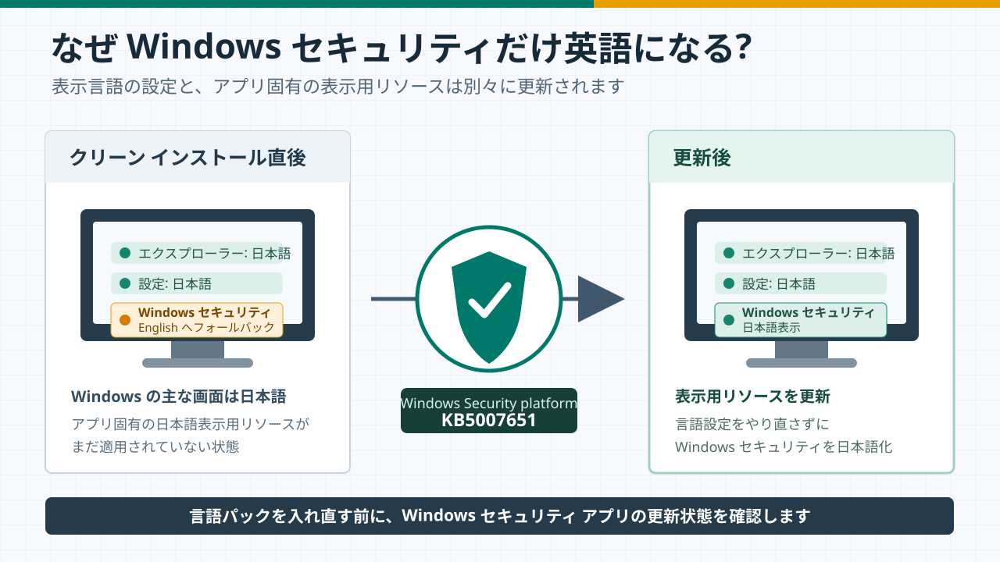
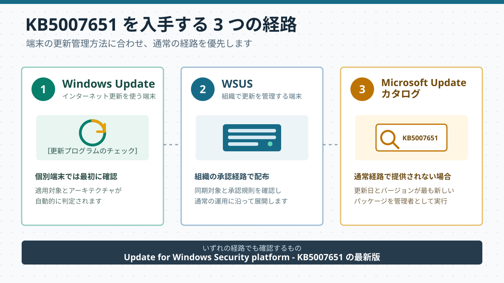
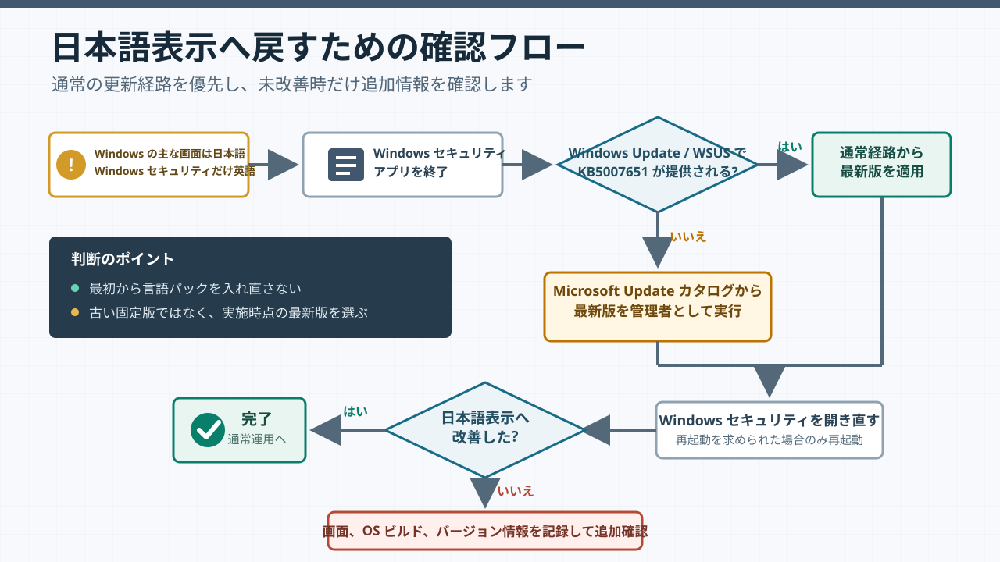

本記事はマイクロソフト社員によって公開されております。
こんにちは、Windows プラットフォーム サポートの丸山です。
Windows 11 バージョン 24H2、25H2、26H1、または Windows Server 2025 の日本語版をクリーン インストールした後、エクスプローラーや設定アプリは日本語で表示されているのに、Windows セキュリティを開くと一部または全体が英語で表示される場合があります。
「日本語の言語パックが正しく入っていないのでは」と考え、言語設定をやり直したくなるところですが、Windows セキュリティだけが英語で、ほかの Windows の画面が日本語で表示されている場合は、まず Windows セキュリティ アプリの更新状態をご確認ください。
TL;DR
まず、Windows セキュリティ プラットフォームの更新プログラム KB5007651 の適用をご検討ください。弊社に報告されております事例では、最新版の適用により事象が改善し、日本語で表示されるようになることがわかっております。Windows Update または組織で使用している更新管理の経路を通じて KB5007651 を適用するか、Microsoft Update カタログからパッケージをダウンロードして手動で適用してください。

図の内容は本文でも説明しています。小さい画面では、図を選択すると拡大表示できます。
目次
どのような事象か
本記事で扱うのは、次の条件に該当する事象です。
- Windows 11 バージョン 24H2、25H2、26H1、または Windows Server 2025 をクリーン インストールした直後である
- Windows の表示言語は日本語に設定されている
- エクスプローラーや設定アプリなど、Windows のほかの画面は日本語で表示される
- Windows セキュリティを開いたときだけ、一部または全体が英語で表示される
一方、サインイン画面や設定アプリを含む Windows 全体が英語で表示される場合は、Windows の表示言語や言語パックの構成を確認する必要があります。その場合は、本記事とは異なる事象として切り分けてお考えください。
また、Windows セキュリティに警告やエラーが表示される、ウイルスと脅威の防止を開けない、保護機能が無効と表示されるといった症状は、表示言語の問題とは別に確認する必要があります。
なぜ Windows セキュリティだけ英語になるのか
Windows の画面は、すべてが 1 つの言語ファイルだけで表示されているわけではありません。Windows 本体の言語リソースに加え、個々のアプリがそれぞれの表示用リソースを持っています。
Windows 11 や Windows Server 2025 のインストール メディア、展開イメージは、作成された時点のファイルを収録したスナップショットです。弊社で確認した Windows 11 の事例では、クリーン インストール直後の Windows セキュリティ アプリにおいて、日本語表示用リソースが含まれておらず、英語表示にフォールバックする動作でございました。また、Windows Server 2025 におきましても同様の事象が発生することが報告されております。
Windows セキュリティ アプリと関連する Windows セキュリティ プラットフォームは、Windows セキュリティ アプリの更新として提供される KB5007651 で更新されます。弊社で確認した Windows 11 の事例では、KB5007651 の適用により Windows セキュリティ アプリが更新され、日本語表示用リソースが正しく反映されるようになりました。Windows Server 2025 におきましても Windows Update から同じ KB5007651 が提供されることを確認しています。このため、本記事に記載した条件に該当する場合は、言語パックを入れ直すのではなく、代わりに KB5007651 の適用をお試しください。
なお、同じ英語表示となる場合でも、言語設定、更新の失敗、アプリの登録状態など、本記事に記載の事象とは別の要因で発生している場合があります。KB5007651 の最新版を適用しても改善しない場合は、後述の「改善しない場合に確認すること」へ進んでください。
KB5007651 は同じ KB 番号のまま新しいバージョンが継続的に公開されます。Microsoft Update カタログに複数の検索結果が表示される場合は、古いバージョンではなく、更新日とバージョンが最も新しいものを選んでください。
対処方法
KB5007651 は、Windows Update、Windows Server Update Services (WSUS)、Microsoft Update カタログから入手できます。Windows 11 と Windows Server 2025 で更新方法に違いはありません。

図の内容は本文でも説明しています。小さい画面では、図を選択すると拡大表示できます。
方法 1: Windows Update または WSUS から適用する
インターネット上の Windows Update を利用している端末では、次の手順で更新します。組織で WSUS などの更新管理を行っている場合は、組織で定められた手順に従って KB5007651 を配布、適用してください。
- Windows セキュリティ アプリを終了します。
- [設定] - [Windows Update] を開きます。
- [更新プログラムのチェック] を選択します。
Update for Windows Security platform - KB5007651が検出された場合は、更新を適用します。- 再起動を求められた場合は、画面の案内に従って再起動します。
- Windows セキュリティ アプリを開き直し、日本語で表示されるか確認します。
Windows セキュリティ アプリの更新はバックグラウンドで適用される場合があります。更新操作の直後に KB5007651 が一覧に表示されない場合でも、Windows セキュリティを開き直して表示をご確認ください。
方法 2: Microsoft Update カタログから手動で適用する
Windows Update や WSUS から KB5007651 が提供されない場合は、Microsoft Update カタログから手動でダウンロードして適用できます。
- Windows セキュリティ アプリを終了します。
- Microsoft Update カタログを開きます。
- 検索結果から、更新日とバージョンが最も新しい
Update for Windows Security platform - KB5007651の [ダウンロード] を選択します。 - ダウンロード画面で、端末のアーキテクチャに対応するファイルを選択します。
- ダウンロードしたインストーラーを右クリックし、[管理者として実行] を選択します。
- Windows セキュリティ アプリを開き直し、日本語で表示されるか確認します。
なお、2026 年 8 月 21 日時点で Microsoft Update カタログに掲載されている最新版は、Version 10.0.29628.1000 です。今後、新しいバージョンへ置き換わるため、実施時点で更新日とバージョンを確認してください。
ここで示す Version 10.0.29628.1000 は、Microsoft Update カタログに掲載されている Windows セキュリティ プラットフォーム更新のバージョンです。Windows セキュリティの [バージョン情報] には複数の項目が表示され、すべてがこの値と同じになるわけではありません。
インストーラーは画面を表示せずに終了する場合がありますが、画面が表示されなかったことだけでは適用完了と判断できません。実行後に Windows セキュリティを開き直し、日本語表示へ改善したか確認してください。改善しない場合は、[バージョン情報] 画面全体のスクリーンショットを保存し、ほかの確認情報とともに Microsoft サポートへご提示ください。[バージョン情報] 画面だけで適用完了を判定するものではありません。
適用後の確認
更新後は、Windows セキュリティ アプリをいったん終了してから開き直し、次の点を確認します。
- ナビゲーションや各ページの見出しが日本語で表示されること
- [ウイルスと脅威の防止]、[アカウントの保護]、[ファイアウォールとネットワーク保護] などのページを開けること
- 更新前に英語で表示されていた箇所が日本語に切り替わっていること
Windows セキュリティの [設定] - [バージョン情報] では、アプリや関連コンポーネントのバージョンを確認できます。問題が残る場合には、更新前後の画面を記録しておくと切り分けに役立ちます。

図の内容は本文でも説明しています。小さい画面では、図を選択すると拡大表示できます。
改善しない場合に確認すること
最新版の KB5007651 を適用しても英語表示が残る場合は、次の点をご確認ください。
英語表示の範囲
Windows セキュリティ全体が英語なのか、特定のページや項目だけが英語なのかを確認します。必要に応じて画面全体のスクリーンショットを保存してください。Windows のバージョンと OS ビルド
winverを実行し、表示された Windows のバージョンと OS ビルドを確認します。Windows セキュリティのバージョン情報
Windows セキュリティの [設定] - [バージョン情報] 画面を確認します。複数のバージョンが表示されるため、画面全体のスクリーンショットを保存しておくことをお勧めします。Windows 全体の表示言語
[設定] - [時刻と言語] - [言語と地域] を開き、Windows の表示言語が日本語であることを確認します。Windows セキュリティ以外のアプリにも英語表示がある場合は、言語パックや優先する言語の構成も確認します。
これらの情報を添えて Microsoft サポートへお問い合わせいただくと、更新プログラムが適用されていない状態なのか、特定の表示項目に限られた別の問題なのかを切り分けやすくなります。
展開イメージを運用するときのポイント
多数の端末を展開する環境では、クリーン インストールやイメージ展開の完了だけでなく、Windows セキュリティ アプリを含む最新更新の適用までを初期構築手順に含めることをお勧めします。
- KB5007651 の適用を、イメージ展開後の初期構築手順へ含める
- WSUS を使用する場合は、Windows セキュリティ プラットフォームの更新を同期、承認できる構成か確認する
- インターネットへ接続できない端末では、展開時点の最新版を Microsoft Update カタログから入手し、事前に検証してから配布する
- 基準イメージを長期間使う場合は、イメージの作成日だけでなく、展開後に適用するアプリ更新の手順も定期的に見直す
KB5007651 は同じ KB 番号でバージョンが更新されるため、特定のファイル名やバージョンを長期間固定するより、展開時点の最新版を確認する運用をお勧めします。
よくある質問
Q1. Windows セキュリティが英語表示でも、保護機能に問題はありますか?
弊社で確認した事例は、Windows セキュリティ アプリの表示言語だけに生じる問題でした。Microsoft Defender ウイルス対策やファイアウォールなど、保護機能の動作には影響しないことを確認しています。
ただし、Windows セキュリティに警告やエラーが表示される、各ページを開けない、あるいは保護機能が “無効” と表示される場合は、表示言語とは別の問題として確認してください。
Q2. 日本語の言語パックを入れ直す必要はありますか?
Windows セキュリティ以外の画面が日本語で表示されている場合は、言語パックを入れ直す前に KB5007651 を適用し、Windows セキュリティ アプリを最新にしてください。Windows 全体が英語で表示される場合や、複数のアプリで日本語表示が不足している場合は、Windows の表示言語を確認し、必要に応じて言語パックのインストールをご検討ください。
Q3. Microsoft Update カタログに KB5007651 が複数表示されます。どれを選べばよいですか?
KB5007651 は同じ KB 番号のまま新しいバージョンが公開されます。更新日とバージョンを比較し、端末のアーキテクチャに対応する最新版を選択してください。
Q4. 手動インストーラーを実行しても画面が表示されません。
インストーラーは画面を表示せずに終了する場合がありますが、それだけでは適用完了と判断できません。Windows セキュリティ アプリを開き直し、日本語表示へ改善したか確認してください。改善しない場合は、Windows セキュリティの [設定] - [バージョン情報] 画面全体のスクリーンショットを保存し、Microsoft サポートへご提示ください。
Q5. WSUS から配布できますか?
はい。KB5007651 の公開情報では、WSUS から利用できる更新プログラムとして案内されています。組織の同期対象と承認規則をご確認ください。
Q6. Windows Server 2025 でも同じ対処を利用できますか?
はい。KB5007651 の公開情報ではビルド 22000 以降が対象と案内されており、Windows Server 2025 でも Windows 11 と同じ方法で適用できます。Windows Update または WSUS から適用するか、Microsoft Update カタログからパッケージをダウンロードして手動で適用し、Windows セキュリティを開き直して表示をご確認ください。
参考情報
- Windows セキュリティ アプリの更新 | Microsoft サポート
- Microsoft Update カタログ: KB5007651
- Windows セキュリティ アプリ | Microsoft Learn
本記事の内容が、Windows 11 または Windows Server 2025 の展開後に表示言語を確認する際の参考となれば幸いです。
本情報の内容は作成日時点のものであり、予告なく変更される場合があります。
更新履歴
2026/08/21 本 Blog の公開
2026/09/04 Windows Server 2025 を対象に追加